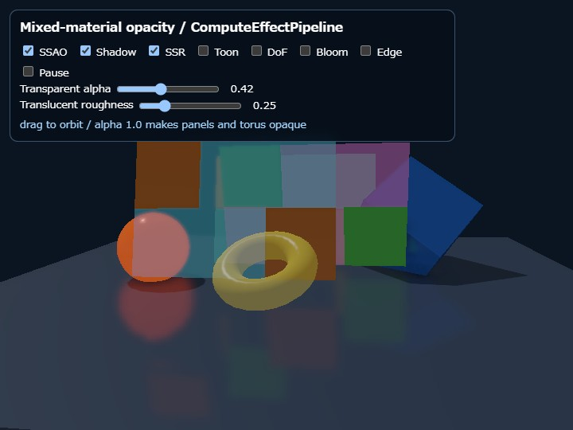

opacity
English | 日本語

概要
opacity は、1つの Shape に不透明マテリアルと半透明マテリアルを持たせ、三角形ごとにマテリアル番号を割り当てるサンプルです。3枚の市松状パネルはそれぞれ1つの Shape ですが、橙色などの区画は material slot 0、青色などの区画は material slot 1を使います。隣り合う三角形は頂点を共有しており、マテリアルを分けるために頂点を複製していません。
Shape.setMaterial()、Shape.getMaterial()、Shape.updateMaterial()はmaterial slot 0を操作します。追加マテリアルにはsetMaterialAt(index, id, params)、getMaterialAt(index)、updateMaterialAt(index, params)を使います。三角形を追加するときはaddTriangle(a, b, c, materialIndex)の第4引数でmaterial slotを指定します。省略時は0です。
描画処理
materialの alpha が1.0なら不透明、1.0未満なら半透明として自動分類されます。不透明三角形は先にdepth書き込みありで描画されます。半透明三角形はすべての Shape から収集され、各三角形の重心をCamera Frameのview-spaceへ移したZ値で奥から手前へ並べた後、depth testあり、depth書き込みなし、source-over Alpha Blendで描画されます。
このサンプルは WebgApp と ComputeEffectPipeline を組み合わせています。利用側が透明用Render Passを追加する必要はありません。renderScene()は不透明三角形だけをG-bufferへ記録し、encode()がDeferred LightingとSSRの後で半透明三角形をHDR scene colorへ合成します。その後にToon、DoF、Bloom、Tone Map、Edgeを処理するため、透明部分も最終的なcolor effectの対象になります。透明三角形が1枚もなければ、透明用HDR copyとRender Passは自動的に省略されます。
実行方法
- 実行ファイルは ./opacity.html です
- マウスまたはタッチのドラッグでCameraを回転できます
SSAO、Shadow、SSR、Toon、DoF、Bloom、Edgeを個別に切り替えられますTransparent alphaを0.0から1.0まで変更できます。市松パネルのmaterial slot 1と黄色いトーラスのmaterial slot 0へ同じ値が設定され、1.0では両方が次のframeから不透明側へ移りますTranslucent roughnessを0.04から1.0まで変更すると、市松パネルと黄色いトーラスの全半透明materialへroughness値が設定されますPauseでパネルの回転を止めると、特定のCamera位置で合成結果を比較できます
確認ポイント
手前の半透明区画を通して、奥の不透明区画や別の半透明区画が見えることを確認してください。Cameraを回したりパネルを動かしたりしても、Shape単位ではなく三角形単位で全Shape横断の並び替えが行われます。alpha=1.0では同じmaterial slot 1の三角形がG-bufferとdepthへ移り、半透明合成が不要になることも確認できます。
画面中央のCamera寄りには、独立したShapeで作った外径3.0の黄色い半透明トーラスがあります。このトーラスと市松パネルが重なる位置では、異なるShapeの透明三角形も奥から手前へ合成されます。Transparent alphaはトーラスと市松パネルの透明materialを同時に変更するため、同じAlphaでShapeをまたぐ合成結果を比較できます。Alphaを1.0にすると、トーラスを含む操作対象の全三角形が不透明描画へ自動分類されます。
Translucent roughnessは、市松パネルのmaterial slot 1とトーラスのmaterial slot 0へ同じ値を設定します。0.04では背景がほぼ鮮明で、Specularは狭く鋭くなります。値を1.0へ近づけるほど、Specularは広く弱くなり、透明surface越しの背景は強くぼけます。トーラス表面のハイライト、トーラスの穴の周囲、市松パネル越しに見える球や境界を比較すると、Alphaとは独立したRoughnessの変化を確認できます。
TransparencyPassは、透明合成前のHDR scene colorから中間と強の二段階のCompute blur画像を作ります。続いて全Shapeの透明三角形からRoughness maskを作り、鮮明な背景と二段階のblur背景をmaterial roughnessだけで合成します。この背景合成にはmaterial Alphaを使用しません。その後、奥から手前へソートした透明三角形のsurface色とSpecularを通常のAlpha Blendで重ねます。この処理はComputeEffectPipelineの内部で自動実行されるため、利用側がFrostedGlassPassや追加Render Passを挿入する必要はありません。
Bloomを有効にすると左側の発光球と半透明部分を含む合成済みsceneへ光のにじみが掛かります。DoF、Toon、Edgeも透明合成後に処理されます。ただし、G-bufferを参照するSSAO、Shadow、SSRは不透明surfaceを基準に計算し、その結果へ透明surfaceを後から重ねます。半透明surface自身はG-buffer、opaque depth、shadow mapへ書き込みません。
制限
透明三角形の順序は重心のview-space depthによる近似です。半透明三角形同士が交差する場合、相互に入り組む場合、AがBより奥、BがCより奥、CがAより奥になる循環順序では、三角形全体に対する一意の正しい順序を作れません。この処理では三角形の分割やWeighted Blended OITを行わず、その種の交差と循環は対象外です。
透明三角形は原則として1枚ごとにdraw callを発行するため、広い範囲を細かく分割した透明meshには向きません。単純なシーンではWebgAppの通常描画を使い、Deferred Lightingや各種Compute効果を必要とするシーンではWebgApp + ComputeEffectPipelineを使用します。どちらの描画方式でも同じ透明material APIを利用できます。
Frost用のblur sourceは、透明triangleを合成する直前の不透明HDR sceneから作られます。手前の透明面が、すでに合成した背後の透明面だけを再度ぼかす処理は行いません。透明面同士の複雑な交差や循環と同様に、多層透明surfaceの厳密な屈折・再ぼかしは対象外です。
API例
const shape = new Shape(gpu);
shape.setMaterial("smooth-shader", {
color: [1.0, 0.5, 0.1, 1.0],
alpha: 1.0
});
shape.setMaterialAt(1, "smooth-shader", {
color: [0.1, 0.7, 1.0, 1.0],
alpha: 0.42
});
const a = shape.addVertex(-1, -1, 0) - 1;
const b = shape.addVertex( 1, -1, 0) - 1;
const c = shape.addVertex( 1, 1, 0) - 1;
const d = shape.addVertex(-1, 1, 0) - 1;
shape.addTriangle(a, b, c, 0);
shape.addTriangle(a, c, d, 1);
shape.endShape();alphaは0.0以上1.0以下の有限値でなければ例外になります。存在しないmaterial slot番号や、slotを飛ばした登録もslot 0へ補正されず例外になるため、設定ミスを描画結果だけから探す必要はありません。